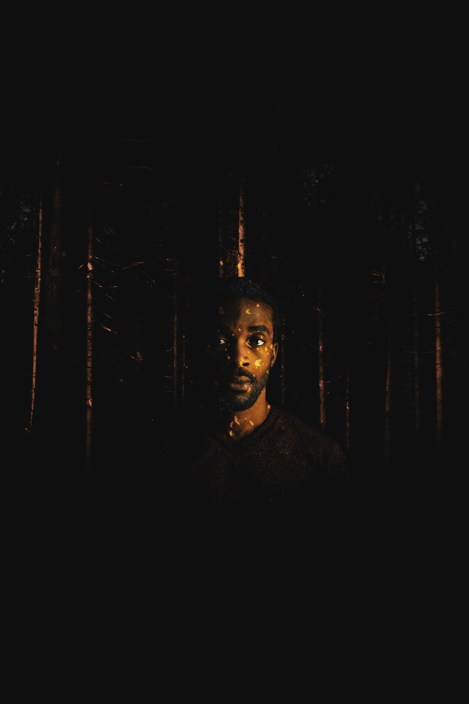

Chapter 1
THE BEGINNING
She was going to miss the annual mgbede dance festival.
It was not the first time the thought had made itself known to Erinma that night, nor would it be the last.

The mgbede dance festival was the most anticipated event of the year in her chiefdom, and as Erinma had recently come of age, she was required to attend.
But when a visiting griot looked in her eyes yesterday and told her of a woman he saw in the Ajaala chiefdom with the same face as her, her suspicions were confirmed and she knew what she had to do.
But when a visiting griot looked in her eyes yesterday and told her of a woman he saw in the Ajaala chiefdom with the same face as her, her suspicions were confirmed and she knew what she had to do.
She was going to find her mother.
Her mother was lost two festivals ago. They had come home early, but her mother wanted to help clean up and escort some young girls home.
She would never see her mother again, and as time went on, she would slowly realize what had happened that night.
Her mother was stolen.
And Erinma knew who was behind it.

The chief of Ajaala, Okorie, was the most powerful chief in the kingdom. Although the Ajaala chiefdom was far from the largest, their ______ system and ______ court benefited the whole kingdom. Chiefs would travel to chiefdom to get advice from the famous court and return with ______.
People across the 7 chiefdoms loved him, even going as far to refer to him as Eze - King. His children were viewed as royalty, his son referred to as the Prince of the kingdom and his daughter the Princess.
But among some, there were rumors.
Rumors that Okorie sent his soldiers to other chiefdoms to capture their women.
Nobody knew why this was or how it occurred. Or what happened to the women after they were taken.
Rumors that Okorie sent his soldiers to other chiefdoms to capture their women.
Nobody knew why this was or how it occurred. Or what happened to the women after they were taken.
Erinma’s chief, Udo, called a meeting last week regarding the increasing disappearance of their women. As the days passed by, more people became suspicious, some even making plans to visit Ajaala.
Erinma was one of them, but she could not embark on the journey alone.
She wasn’t the only one who wanted answers and she knew who to ask for help.
Amara,
Udo’s daughter.
Udo’s daughter.